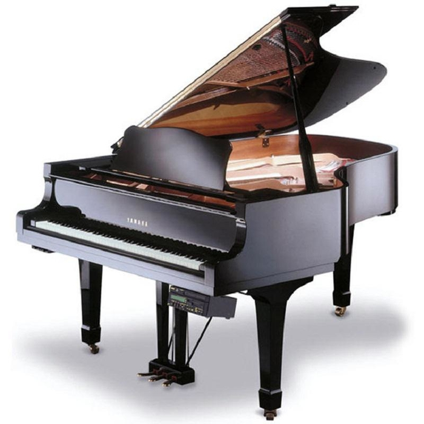
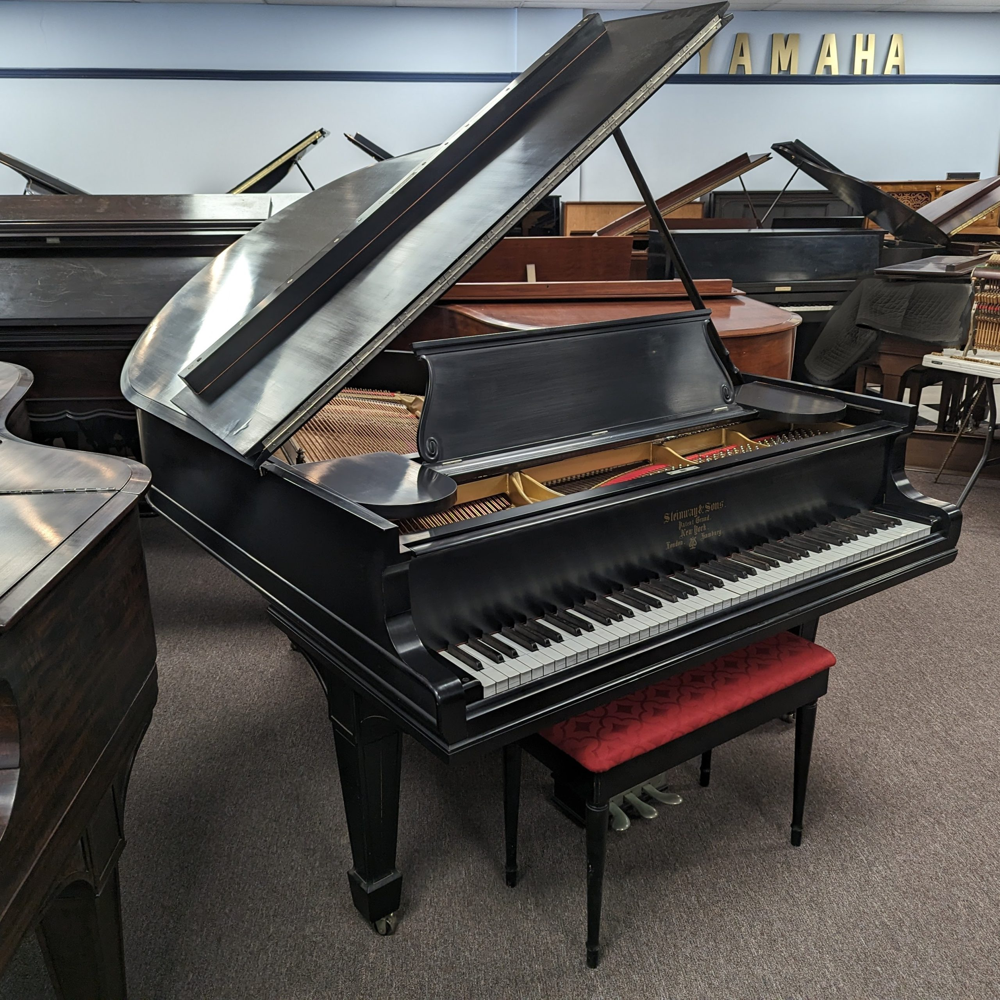
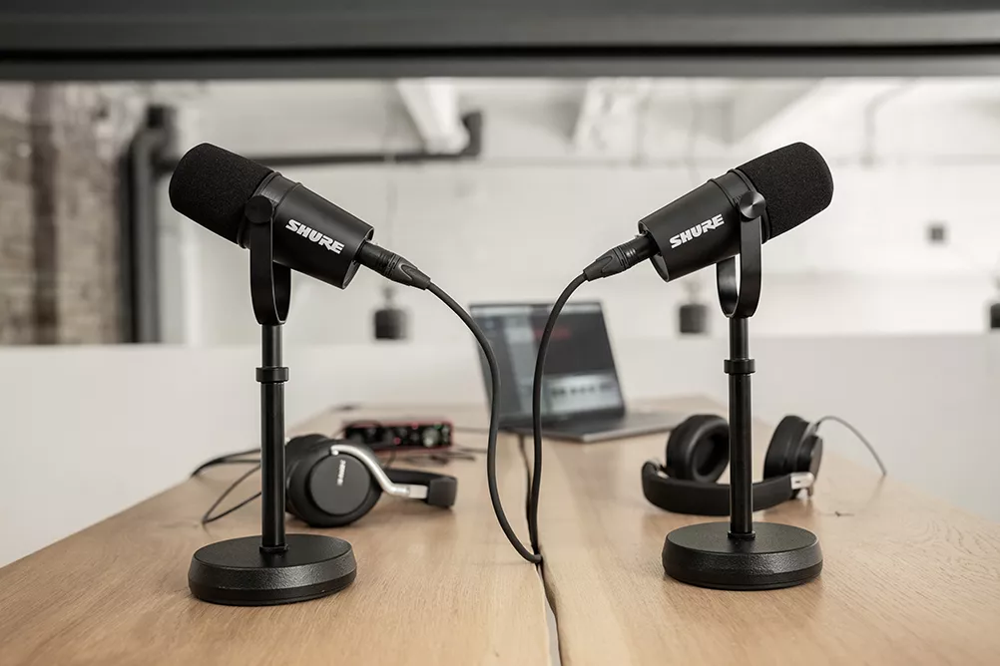
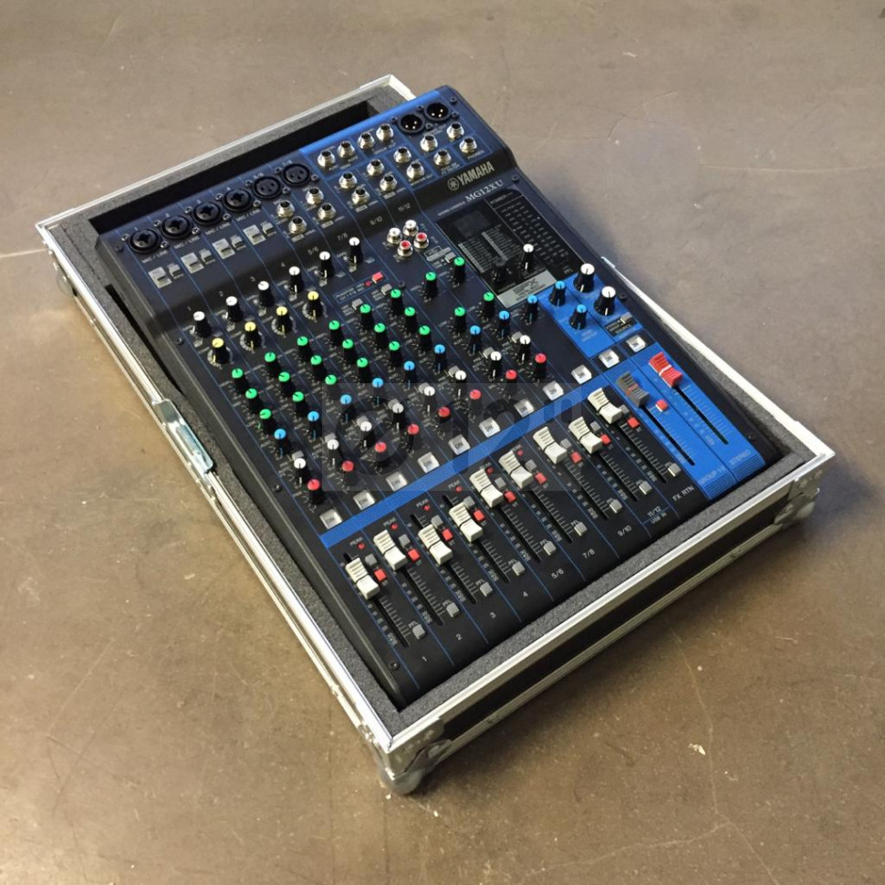
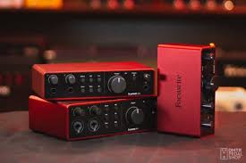
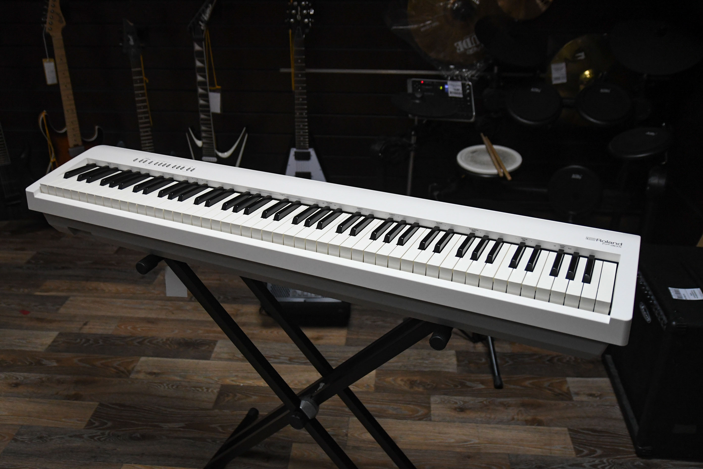

Последние новости

Новая коллекция роялей Yamaha
В наш магазин поступила новая коллекция роялей Yamaha, которая сочетает традиции и инновации. Эти инструменты идеально подходят как для профессиональных музыкантов, так и для любителей, благодаря улучшенному звучанию и долговечности. Коллекция включает как классические модели, так и новейшие разработки с уникальными функциями, подходящими для концертных залов и студий. Вы можете ознакомиться с полным ассортиментом и выбрать модель, соответствующую вашим требованиям.
Дата публикации: 2025-01-01
Концертная серия инструментов Steinway
Представляем новую серию концертных инструментов Steinway, которая доступна для заказа. Эти рояли и пианино, признанные в мировом музыкальном сообществе, используются на самых престижных сценах. Каждая модель из новой серии прошла строгие испытания качества, чтобы обеспечить идеальное звучание и максимальную надежность. Ознакомьтесь с характеристиками и уникальными преимуществами этих инструментов, которые могут стать достойным дополнением для вашей концертной программы.
Дата публикации: 2025-01-01


Премьера нового микрофона Shure MV7X
Компания Shure представила обновленную версию микрофона MV7X, специально разработанную для подкастеров и стримеров. Новый дизайн и улучшенное качество звука делают его идеальным выбором для студий и домашних условий. Микрофон поддерживает подключение через USB и XLR, что позволяет использовать его как для профессиональных записей, так и для прямых эфиров. Помимо улучшенной акустики, он оснащен функциями шумоподавления и настроек для разных типов голоса, что делает его универсальным инструментом.
Дата публикации: 2025-01-01
Обновление микшерных пультов Yamaha
Серия микшерных пультов Yamaha MG получила обновление: улучшенная совместимость с DAW, новые встроенные эффекты и поддержка Bluetooth для передачи аудио в реальном времени. Эти изменения значительно улучшили работу с различными цифровыми аудиостанциями и расширили возможности для создания музыки в любых условиях. Теперь эти пульты стали еще удобнее для записи, микширования и обработки звука, что делает их идеальными для студий, концертов и мобильных приложений.
Дата публикации: 2025-01-01


Расширение ассортимента аудиоинтерфейсов Focusrite
Focusrite выпустила новую серию аудиоинтерфейсов Scarlett, включая модели с 8 входами для профессиональных студий. Эти новые устройства предлагают улучшенные параметры обработки звука, высококачественные конвертеры и низкую задержку, что делает их идеальными для записи вокала, инструментов и работы с многоканальными микшерами. С добавлением моделей с 8 входами, эти интерфейсы подходят для более крупных студийных проектов, расширяя возможности для записи и пост-продакшн.
Дата публикации: 2025-01-01
Обновление каталога цифровых пианино Roland
Мы обновили раздел цифровых пианино бренда Roland. Теперь доступны новые модели с расширенными возможностями подключения и улучшенным звуком. В новом каталоге вы найдете как компактные модели для дома, так и профессиональные инструменты для студий и концертных залов. Все новые пианино оснащены последними достижениями в области технологии моделирования звука, а также имеют поддержку подключения к компьютерам и мобильным устройствам для обучения и записи музыки.
Дата публикации: 2025-01-01
